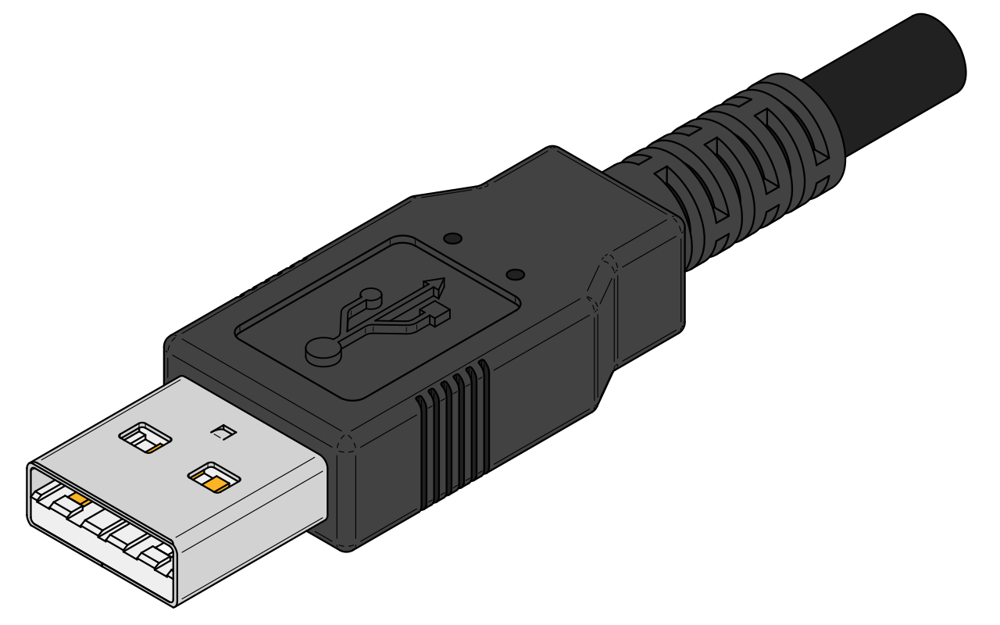
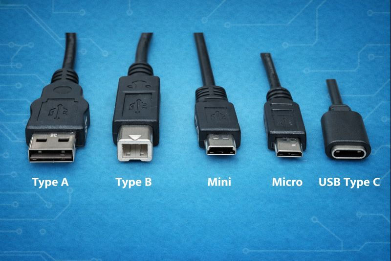

La norme USB (Universal Serial Bus) est une technologie apparue en 1996 dont l’objectif principal est de simplifier la connexion entre les ordinateurs et les périphériques (clavier, souris, clé USB, imprimante, smartphone, etc.).
Avant l’USB, chaque périphérique utilisait un port différent, ce qui rendait les ordinateurs complexes à utiliser.
L’USB a donc profondément changé l’informatique en apportant :

La norme USB a été développée par un consortium d’entreprises dont Intel, Microsoft, IBM, Apple ou encore Compaq.
L’objectif était de remplacer les anciens ports (port série, port parallèle, PS/2)
| Version USB | Année | Débit maximal | Exemples d’utilisation |
|---|---|---|---|
| USB 1.0 | 1996 | 12 Mb/s | Claviers, souris |
| USB 2.0 | 2000 | 480 Mb/s | Clés USB, imprimantes |
| USB 3.0 | 2008 | 5 Gb/s | Disques durs externes |
| USB 3.1 | 2013 | 10 Gb/s | SSD externes |
| USB 3.2 | 2017 | 20 Gb/s | Matériel professionnel |
| USB4 | 2019 | 40 Gb/s | Écrans, stations d’accueil |

Aujourd’hui, l’USB Type C tend à devenir un standard universel. Il est utilisé pour recharger les smartphones, les ordinateurs portables et même certains écrans.
Grâce à l’USB, un seul câble peut servir à la fois pour l’alimentation, le transfert de données et l’affichage vidéo.
L’Union européenne a d’ailleurs choisi l’USB Type C comme connecteur de charge commun afin de réduire les déchets électroniques.
La norme USB est aujourd’hui indispensable en informatique. Grâce à son universalité, sa simplicitéet ses performances, elle est utilisée dans presque tous les appareils numériques. Son évolution constante montre qu’elle continue de s’adapter aux nouveaux besoins technologiques.
Pour aller plus loin : Regarder une vidéo explicative sur les antivirus